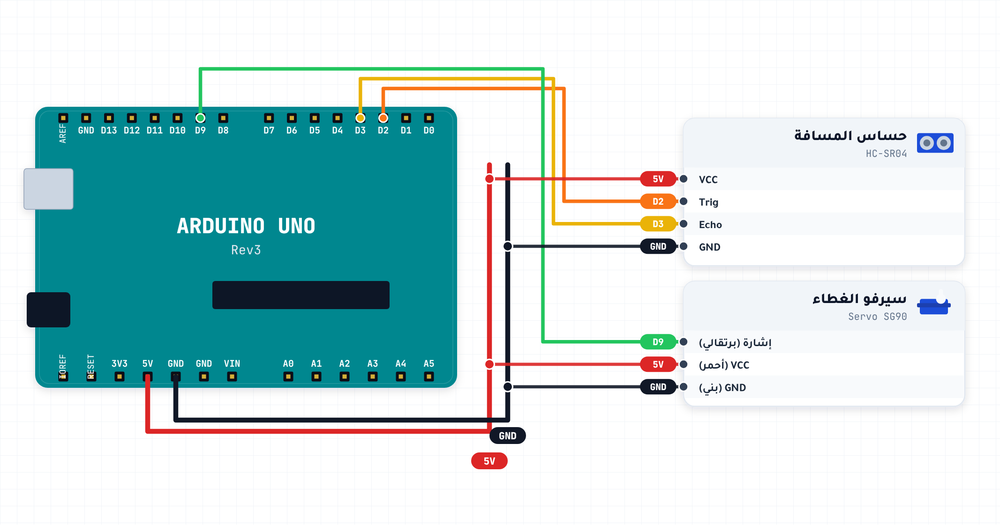

▶فيديو الشرح
غطاء يفتح وحده عند اقتراب اليد ويُغلق بعد ابتعادها، دون أي لمس.
1المكونات
ARDUINO UNOboardحساس المسافةHC-SR04سيرفو الغطاءServo SG90أسلاك توصيلJumper Wiresلوحة تجاربBreadboard
2مخطط التوصيل

اضغط على المخطط لتكبيره · نسخة SVG عالية الدقة
| القطعة | الطرف | يوصل إلى |
|---|---|---|
| حساس المسافة | VCC | 5V |
| حساس المسافة | Trig | D2 |
| حساس المسافة | Echo | D3 |
| حساس المسافة | GND | GND |
| سيرفو الغطاء | إشارة (برتقالي) | D9 |
| سيرفو الغطاء | VCC (أحمر) | 5V |
| سيرفو الغطاء | GND (بني) | GND |
3الكود
المكتبات المطلوبة (من Arduino IDE ← Sketch ← Include Library ← Manage Libraries):
- Servo (مدمجة مع Arduino IDE)
/* المستوى المتوسط — المشروع 1: سلة المهملات الذكية (Smart Dustbin) كتاب: 38 مشروع في شهر — لؤي النصري (@robotlouay) التوصيل: HC-SR04: VCC → 5V Trig → Pin 2 Echo → Pin 3 GND → GND Servo: أحمر → 5V بني → GND برتقالي → Pin 9 نصيحة: مكثف 100–470µF بين 5V و GND يمنع اهتزاز القراءات عند تحرك السيرفو. */ #include <Servo.h> const int TRIG_PIN = 2; const int ECHO_PIN = 3; const int SERVO_PIN = 9; const int OPEN_ANGLE = 90; const int CLOSE_ANGLE = 0; const int OPEN_CM = 15; // يفتح إذا اقتربت اليد أقل من 15 سم const int CLOSE_CM = 20; // لا يُغلق إلا إذا ابتعدت أكثر من 20 سم (Hysteresis) const unsigned long HOLD_MS = 3000; // يبقى مفتوحاً 3 ثوانٍ على الأقل Servo lid; bool isOpen = false; unsigned long openedAt = 0; float readDistanceCm() { digitalWrite(TRIG_PIN, LOW); delayMicroseconds(2); digitalWrite(TRIG_PIN, HIGH); delayMicroseconds(10); digitalWrite(TRIG_PIN, LOW); long t = pulseIn(ECHO_PIN, HIGH, 30000); if (t == 0) return 999; // لا يوجد جسم return t * 0.034 / 2; } void setup() { Serial.begin(9600); pinMode(TRIG_PIN, OUTPUT); pinMode(ECHO_PIN, INPUT); lid.attach(SERVO_PIN); lid.write(CLOSE_ANGLE); } void loop() { float d = readDistanceCm(); Serial.println(d); if (!isOpen && d < OPEN_CM) { // يد قريبة → فتح lid.write(OPEN_ANGLE); isOpen = true; openedAt = millis(); } if (isOpen && d > CLOSE_CM && millis() - openedAt > HOLD_MS) { // ابتعدت → إغلاق lid.write(CLOSE_ANGLE); isOpen = false; } delay(100); }
4كيف يعمل؟
- الحساس يقيس المسافة باستمرار
- أقل من 15 سم → السيرفو يفتح 90°
- يبقى مفتوحاً 3 ثوانٍ على الأقل
- أكثر من 20 سم → يُغلق
⚠ قبل توصيل الكهرباء: راجع كل سلك مع الجدول أعلاه، وتأكد من عدم وجود تماس بين 5V و GND. اختر اللوحة والمنفذ الصحيحين من قائمة Tools في Arduino IDE.